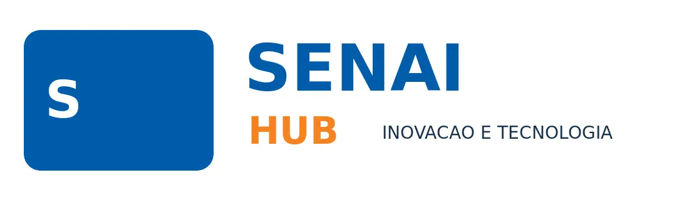

Visualização
Carrosséis em alta resolução e modo apresentação.

Academia de ProjetosMicroaulas técnicasUma trilha visual, prática e progressiva para dimensionar, analisar, documentar e validar instalações elétricas industriais.
Estude na ordem sugerida ou acesse diretamente o tema necessário para seu projeto.
Nenhuma microaula encontrada para esse termo.
Cada microaula foi construída com exemplos industriais coerentes e imagens técnicas para apoiar aulas presenciais, revisão individual e consulta em campo.
Carrosséis em alta resolução e modo apresentação.
Progresso, anotações, atalhos e desafios rápidos.
O mesmo estudo industrial evolui entre os módulos.